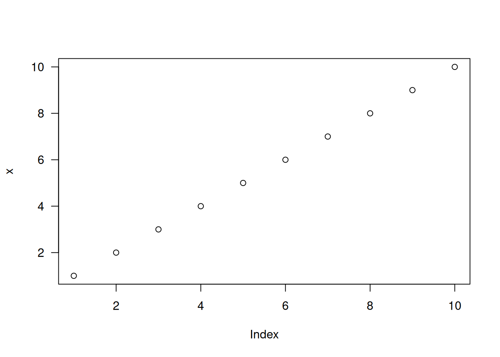
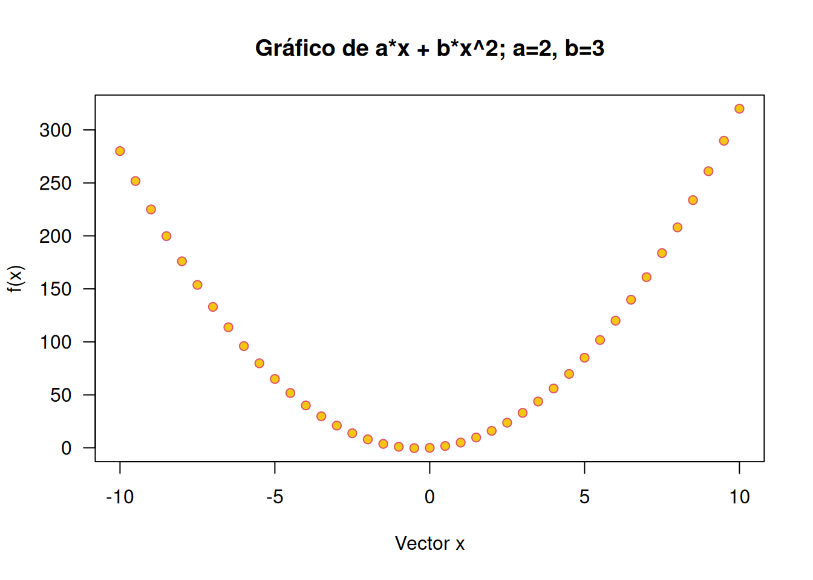
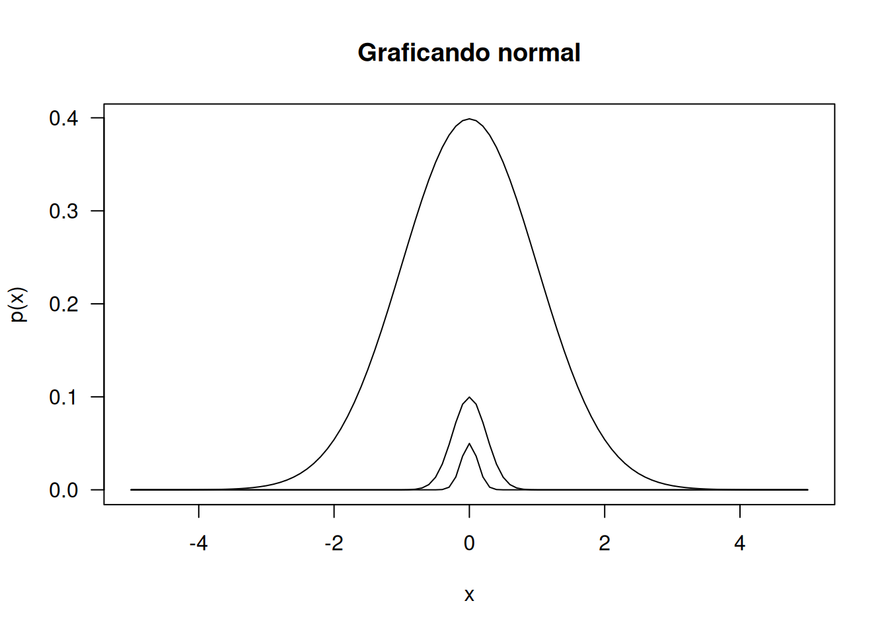
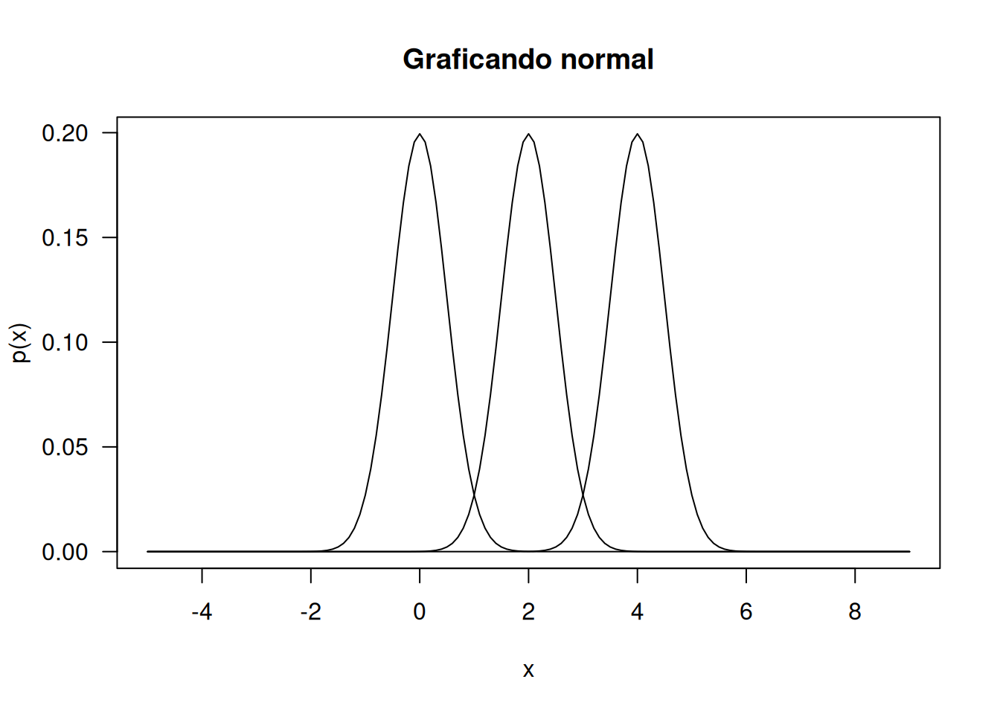
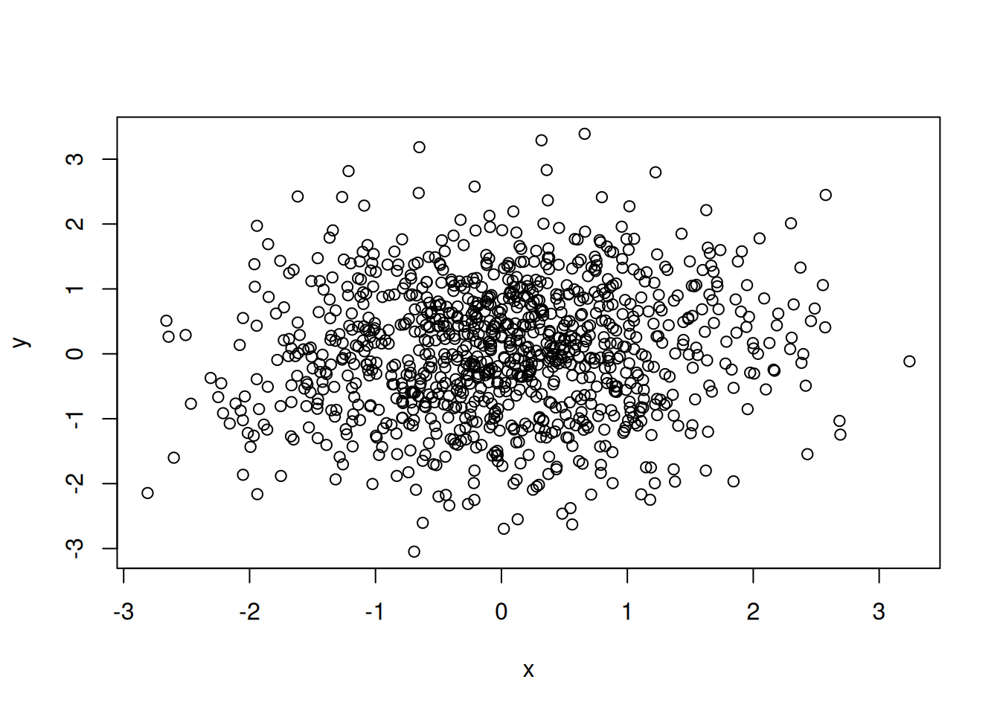
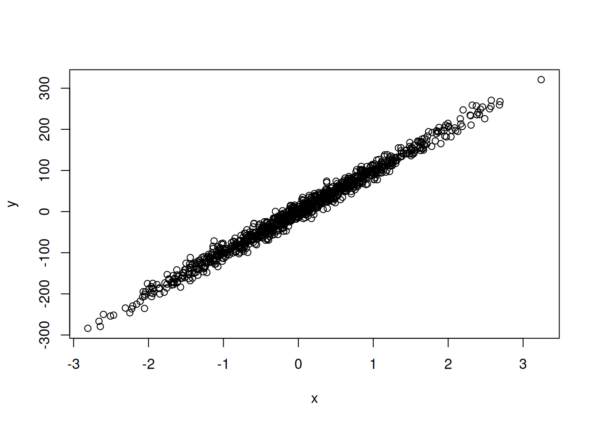
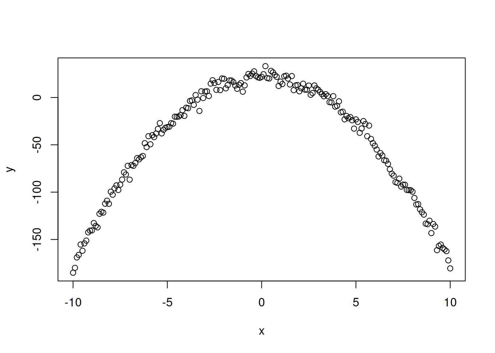
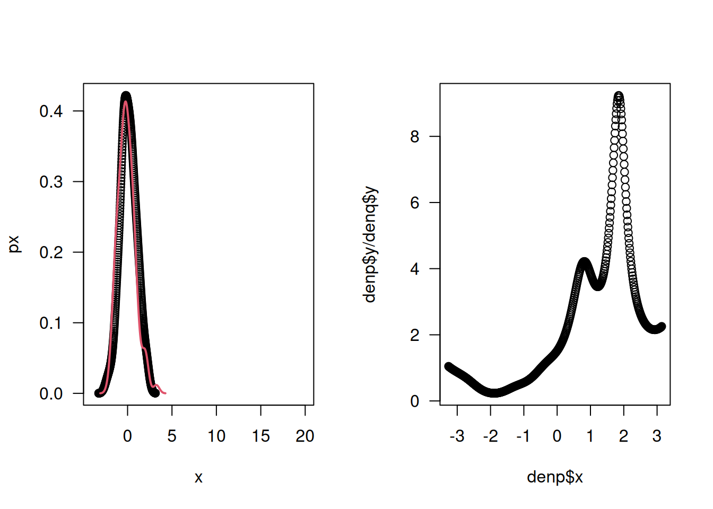
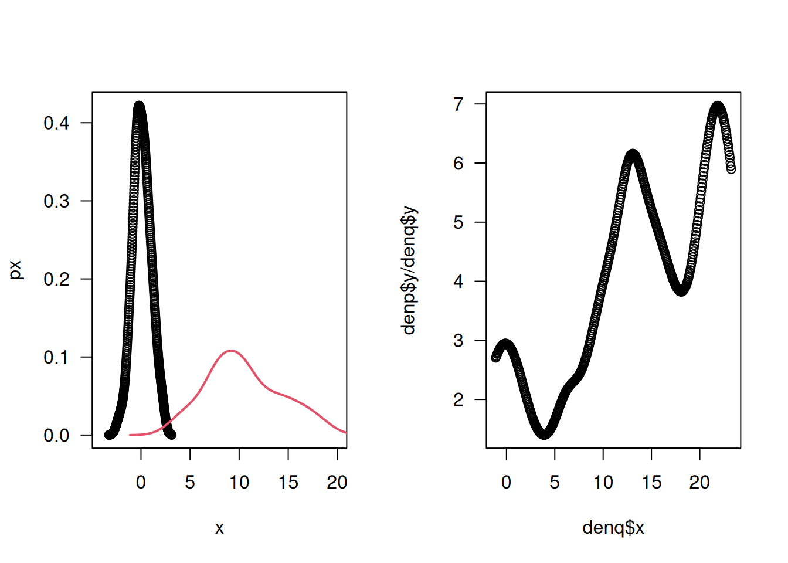

# asignación
a <- 5 # "a" vale 5; longitud de 1
vec <- c(1, 2, 7) # "vec" tiene los valores 1, 2 y 7; longitud de 3
length(vec)[1] 3Día 3. Análisis de métricas de información en R
Instalaremos algunos paquetes necesarios.
install.packages('devtools')
devtools::install_github('jealcalat/YEAB')El paquete YEAB es un paquete experimental, aún en desarrollo. Para más información consultar la Wiki del paquete.
Asignación y vectores
Por asignar vamos a entender que fijamos un valor (números o cadenas de caracteres) en una constante (letra o nombre). Una vez que asignamos valores, éstos ocupan un lugar en la memoria de la sesión abierta. En R se puede asignar con el signo igual, = o con una “flecha” (que es llamado el operador asignación), <-. La asignación generalmente sucede de derecha a izquierda (de ahí el sentido de la flecha). En R se considera de buen estilo usar solo <- para asignar, y reservar = para otros usos.
Por vector nos referimos a una colección de elementos. La longitud del vector es la cantidad de elementos que el vector tiene.
# asignación
a <- 5 # "a" vale 5; longitud de 1
vec <- c(1, 2, 7) # "vec" tiene los valores 1, 2 y 7; longitud de 3
length(vec)[1] 3Operaciones aritméticas
R puede ser usado como una calculadora.
Suma:
# sumamos el vector a con el vector vec; debe retornar otro vector con las sumas:
# 5+1, 5+2, 5+7
a + vec[1] 6 7 12Resta:
# 5-1, 5-2, 5-7
a - vec[1] 4 3 -2Multiplicación:
# retorna vector también
# 5*1, 5*2, 5*7
a * vec[1] 5 10 35División:
# retorna vector también
# 5/1, 5/2, 5/7
a / vec[1] 5.0000000 2.5000000 0.7142857Raíz cuadrada:
# retorna vector también
# sqrt(1), sqrt(2), sqrt(7)
sqrt(vec)[1] 1.000000 1.414214 2.645751Potenciación:
# retorna vector también
# 5^1, 5^2, 5^7
a^vec[1] 5 25 78125La raíz cuadrada es un caso de potenciación a la 1/2
\[ \sqrt[\uproot{5} m]{x^n} = x^{n/m} \]
vec^(1/2)[1] 1.000000 1.414214 2.645751El exponente con el número de Euler \(e\) es un caso de potenciación
# e^1, e^2, e^7
exp(vec)[1] 2.718282 7.389056 1096.633158Logaritmos
# logaritmo natural, o base e
log(vec)[1] 0.0000000 0.6931472 1.9459101# logaritmo base 2
log(vec, base = 2)[1] 0.000000 1.000000 2.807355# logaritmo base 10
log(vec, base = 10)[1] 0.000000 0.301030 0.845098Una función es una transformación, o un mapeo, desde un conjunto de partida \(X\) hasta un conjunto de llegada \(Y\). Decimos que \(Y\) es una función de \(X\), a veces expresado como \(f(x) = y\).
Programemos la función
\[ y = 2x + x^2 \]
fx <- function(x) {
2 * x + x^2
}Dentro del paréntesis en function(x) se encuentran los argumentos de la función. En este caso, el único argumento ex \(x\). Dentro de las llaves se encuentra el cuerpo de la función. En este caso, la transformación que queremos hacer: multiplicar \(x\) por 2, luego sumarle el cuadrado de \(x\).
Probemos nuestra función para
\[ X = \{5, 10, 2\} \]
# asignamos los valores al vector x
x <- c(5, 10, 2)
# los resultados serán 2*5 + 5^2 para el primero
# 2*10 + 10^2 para el segundo y
# 2*2 + 2^2 para el tercero
fx(x)[1] 35 120 8Ahora una función más compleja:
\[ y = ax + bx^2 \]
Ahora no tenemos números mutiplicando a \(x\), sino constantes.
fx_ab <- function(x, a, b) {
a * x + b * x^2
}Lo que hicimos fue agregar \(a\) y \(b\) como argumentos de la función. Al igual que con \(x\), al usar la función debemos indicar su valor. Si queremos que \(a=2\) y \(b=3\)
fx_ab(x, a = 2, b = 3)[1] 85 320 16# alternativamente
a <- 2
b <- 3
fx_ab(x, a = a, b = b)[1] 85 320 16En R también se puede graficar. Existen diferentes formas de hacerlo. Como existen diferentes paqueterías, hay muchas opciones para realizar gráficos. La más básica es la que viene con R base, la función plot().
x <- 1:10 # valores del 1 al 10 separados por 1
par(las = 1)
plot(x)
Algunos elementos gráficos que quizá quieras modificar:
par(las = 1) # para que las etiquetas de los ejes sean horizontales
plot(
x,
y,
xlab = "Eje x", # etiqueta de eje x
ylab = "Eje y", # etiqueta del eje y
type = 'l', # tipo de gráfico; l para línea, p para puntos, b para ambos,
pch = 21, # tipo de punto si gráfico es p ó b; existen del 1 al 25
lty = 1, # tipo de línea si gráfico es l ó b; existen del 0 al 5 (Creo)
cex = 2, # tamaño del punto
lwd = 2, # grosor de línea
main = "Título de gráfico", # pues eso
bg = 'black', # relleno del punto,
col = "red" # color de la línea (o para ciertos tipos de punto, el contorno)
)Grafiquemos nuestra función
\[ y = ax + bx^2 \]
fx_ab <- function(x, a, b) {
a * x + b * x^2
}
x <- seq(-10, 10, 0.5) # del -10 al 10 cada 0.1
y <- fx_ab(x = x, a = 2, b = 3)
par(las = 1)
plot(
x = x,
y = y,
xlab = "Vector x",
ylab = "f(x)",
pch = 21,
col = 2,
bg = 7,
main = "Gráfico de a*x + b*x^2; a=2, b=3"
)
Ahora graficamos una función aún más compleja: la función de densidad de probabilidad normal.
\[ p(x) = \frac{1}{\sigma \sqrt{2\pi}} \exp\left\{\frac{-(x-\mu)^2}{2\sigma^2}\right\} \]
¿Cuántos argumentos necesitamos?
normal_den <- function(x, sigma, mu){
1 / (sigma * sqrt(2 * pi)) * exp(-(x - mu)^2 / 2 * sigma^2)
}Probando el efecto de \(\sigma\) con \(\sigma=\{1, 4, 8\}\) y \(\mu=0\).
Necesitamos hacer un ciclo for.
# asignar valores al vector sigma
sigma_vec <- c(1, 4, 8)
# asignar valores a x, de cuyos valores queremos las probabilidades
x <- seq(-5, 5, 0.1)
for (sigma in sigma_vec){ # por cada valor de sigma_vec
# hacer lo siguiente, hasta agotar todos los elementos de sigma_vec
# obtener el vector de probabilidades
px <- normal_den(x, sigma = sigma, mu = 0)
if (sigma == 1) {# si sigma es 1 (el primer valor)
# graficar una primera vez
par(las = 1)
plot(
x,
px,
type = 'l',
xlab = 'x',
ylab = 'p(x)',
main = "Graficando normal"
)
} else {
# si sigma no es 1, añadir los siguientes elementos gráficos
lines(x, px)
}
}
Ahora probemos el efecto de diferentes \(\mu\) con \(\sigma=2\)
# asignar valores al vector sigma
mu_vec <- c(0, 2, 4)
# asignar valores a x, de cuyos valores queremos las probabilidades
x <- seq(-5, 9, 0.1)
for (mu in mu_vec){ # por cada valor de sigma_vec
# hacer lo siguiente, hasta agotar todos los elementos de sigma_vec
# obtener el vector de probabilidades
px <- normal_den(x, sigma = 2, mu = mu)
if (mu == 0) {# si sigma es 1 (el primer valor)
# graficar una primera vez
par(las = 1)
plot(
x,
px,
type = 'l',
xlab = 'x',
ylab = 'p(x)',
main = "Graficando normal"
)
} else {
# si sigma no es 1, añadir los siguientes elementos gráficos
lines(x, px)
}
}
Habíamos definido la entropía como el promedio de la información de una variable aleatoria \(X\).
\[ H(x) = \sum_{i=1}^n p_i I(x_i) = \sum_{i=1}^n p_i \log_b\frac{1}{p_i} \]
La función necesita de probabilidades. Si tenemos una variable aleatoria, debemos introducir dichas probabilidades.
El problema es que está definida para variables discretas. Shannon pensó que para distribuciones continuas sería suficiente convertir la sumatoria en una integral
\[ h(X) = \int_{\mathcal{X}}p(x)\log\frac{1}{p(x)}dx \]
Pero resultó ser incorrecto. Una forma de rodear este problema es discretizar la distribución. Existen varias opciones para la discretización.
library(dplyr)
Attaching package: 'dplyr'The following objects are masked from 'package:stats':
filter, lagThe following objects are masked from 'package:base':
intersect, setdiff, setequal, unionlibrary(infotheo)
entropy_x <- function(x) {
X <- as.matrix(x)
bins <- discretize(x, nbins=sqrt(nrow(X)))
tab_x <- table(bins) %>% as.data.frame()
px <- tab_x$Freq / sum(tab_x$Freq)
sum(px * log(1/px))
}
entropy_cont <- function(x, from, to){
integrand <- function(x, t) {
dx <- density(x, from = from, to = to)
f.x <- approx(dx$x, dx$y, t)$y
hx <- f.x * log(1/f.x)
hx[is.infinite(hx)] <- 0
hx
}
integrate(integrand, x = x, lower = from, upper = to)$value
}
set.seed(123)
x <- rnorm(1000)
entropy_x(x)[1] 3.433062# discretizar
Xdiscrete <- discretize(x) # por defecto, nbins = length^(1/3)
# función entropy de infotheo
entropy(Xdiscrete)[1] 2.197212# entropía continua
entropy_cont(x, from = min(x), to = max(x))[1] 1.420031La información mutua
\[ I(X;Y) = H(X) - H(X|Y) \]
es la incertidumbre promedio sobre \(X\) que queda después de conocer \(Y\). Si dos variables \(X\) y \(Y\) son independientes, esta cantidad será 0 o próxima a 0.
La métrica de información mutua está implementada en YEAB con la función mut_info_discret. Por el momento, solo funciona si los vectores \(x\) y \(y\) son del mismo tamaño. Por ejemplo, si queremos comparar la distribución de intervalos entre reforzadores con la distribución de intervalos entre respuestas, debemos tener un intervalo entre respuestas por intervalo entre reforzadores. Una forma de lograr esto sería tomando la media de los intervalos entre respuestas.
library(YEAB)
# library(infotheo)
set.seed(123)
x <- rnorm(1000)
y <- rnorm(1000)
plot(x, y)
# close to 0 if they are independent
mut_info_discret(x, y)[1] 0.0351483y <- 100 * x + rnorm(length(x), 0, 12)
plot(x, y)
# far from 0 if they are not independent
mut_info_discret(x, y)[1] 1.553392En el siguiente ejemplo, la correlación es 0 pero la información mutua diferente de 0.
set.seed(156)
x <- seq(-10, 10, 0.1)
y <- 20 + 2*(1-x^2) + rnorm(length(x), 0, 5)
plot(x, y)
mut_info_discret(x, y)[1] 0.8509483cor(x, y)[1] 0.002815912Una métrica interesante es la divergencia Kullback-Leibler, que permite medir disimilitud entre distribuciones
\[ KL(p || q) = \int p(x) \log\frac{p(x)}{q(x)} dx \]
Está implementada en YEAB como kld_d()
set.seed(123)
p <- rnorm(100)
q <- rnorm(100)
denp <- density(p, n = 512)
denq <- density(q, n = 512)
par(las = 1, mfrow = c(1, 2))
plot(denp$x, denp$y, xlim = c(-4, 20), xlab = 'x', ylab = 'px')
lines(denq$x, denq$y, col = 2, lwd = 2)
plot(denp$x, denp$y/denq$y)
kld_d(p, q, -Inf, Inf) # 0.07579204[1] 0.07579204q <- rnorm(100, 10, 4)
denp <- density(p, n = 512)
denq <- density(q, n = 512)
par(las = 1, mfrow = c(1, 2))
plot(denp$x, denp$y, xlim = c(-4, 20), xlab = 'x', ylab = 'px')
lines(denq$x, denq$y, col = 2, lwd = 2)
kld_d(p, q, -Inf, Inf) # 7.769912[1] 7.769912# graficar la división
plot(denq$x, denp$y/denq$y)